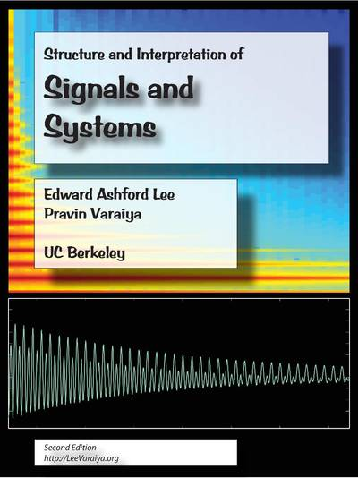
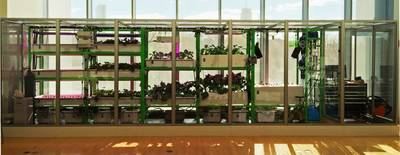
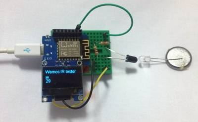
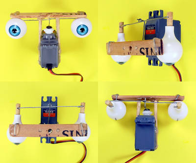

2016-12-29 - Nº 87

Editorial
Esta é a Newsletter Nº 87 que se apresenta com o mesmo formato que as anteriores. Se gostar da Newsletter partilhe-a!
Todas as Newsletters encontram-se indexadas no link.
Esta Newsletter tem os seguintes tópicos:
Esta é a última newsletter de 2016. Pelas newsletters deste ano passaram cerca de 2000 projectos de maker, 170 modelos 3D muitos deles paramétricos, cerca de 220 livros e revistas de distribuição livre, 600 notícias e artigos sobre ciência e tecnologia, trouxemos a informação que entendemos ser pertinente para a audiência desta newsletter que se traduz num índice do que melhor a Internet nos dá.
Hoje comemora-se o nascimento de Charles Goodyear. Este químico autodidacta, nasceu em Connecticut nos Estados Unidos, e ficou conhecido por ter inventado o processo de vulcanização da borracha. A descoberta foi acidental depois de cinco anos de tentativas falhadas a tentar tornar a borracha mais resistente. Comemora-se também o nascimento de Alexander Parkes. É atribuído a este inventor Inglês a primeira forma de plástico feita pelo homem - a Parkesina. Por fim, comemora-se também o nascimento no dia de hoje de Thomas Joannes Stieltjes. Este matemático Holandês nascido em Zwolle, ficou conhecido pela integral de Riemann–Stieltjes.
Nesta semana ficámos a saber que o ano de 2016 irá ter mais um segundo. Devido à Terra estar a abrandar terá que ser feito este acerto. É um fenómeno que iremos observar a cada 18 meses. A precisão dos relógios atómicos que se encontram nos diversos dispositivos , alguns deles em órbita, associada com o atraso da Terra obriga a estes acertos. Ficámos também a saber que diversas companhias mineiras estão a utilizar robôs para recolher o minério e para o transportar reduzindo a mão de-obra humana.
Na Newsletter desta semana apresentamos diversos projetos de maker assim como alguns modelos 3D que poderão ser úteis. São apresentados também 6 livros sobre os temas de introdução à programação assembly em processadores MIPS, introdução aos sistemas embebidos, a engenharia de sistemas embebidos confiáveis, inovação aberta, Desenho, modelagem e simulação de sistemas usando Ptolomeu II e por fim Estrutura e Interpretação de Sinais e Sistemas.
Sendo a última newsletter do ano não posso deixar de expressar os meus votos de um excelente 2017 para todos.
 João Alves ([email protected])
João Alves ([email protected])
O conteúdo da Newsletter encontra-se sob a licença  Creative Commons Attribution-NonCommercial-ShareAlike 4.0 International License.
Creative Commons Attribution-NonCommercial-ShareAlike 4.0 International License.
Novidades da Semana ^
A Leap Second Will Be Added December 31, 2016
"Because Earth is slowing down, we will synchronize our clocks by adding a leap second just before we enter 2017. Just before midnight on New Year's Eve 2016 UTC time, a leap second will be added to Coordinated Universal Time (UTC), which is the world's main time standard. Leap seconds are added either at the end of June or December approximately every 18 months in order to synchronize clocks worldwide with the Earth's slowing rotation." [...]
Mining 24 Hours a Day with Robots
"Mining companies are rolling out autonomous trucks, drills, and trains, which will boost efficiency but also reduce the need for human employees. Each of these trucks is the size of a small two-story house. None has a driver or anyone else on board. Mining company Rio Tinto has 73 of these titans hauling iron ore 24 hours a day at four mines in Australia’s Mars-red northwest corner. At this one, known as West Angelas, the vehicles work alongside robotic rock drilling rigs. The company is also upgrading the locomotives that haul ore hundreds of miles to port—the upgrades will allow the trains to drive themselves, and be loaded and unloaded automatically. Rio Tinto intends its automated operations in Australia to preview a more efficient future for all of its mines—one that will also reduce the need for human miners. The rising capabilities and falling costs of robotics technology are allowing mining and oil companies to reimagine the dirty, dangerous business of getting resources out of the ground." [...]
Ciência e Tecnologia ^
Deep sea coral reefs more accessible with touch-sensitive underwater robotic platform
"Current underwater exploration and monitoring of oceanic resources is both expensive and challenging. It requires human divers who can only explore underwater environments during short periods of time and who can only safely go down to certain depths. Underwater vehicles have proven to be useful for exploring oceans at greater depths, but they lack human dexterity, which is necessary for performing fine manipulation tasks such as collecting samples and in situ experimentation. These underwater vehicles are also large and cumbersome, and their mechanical characteristics make them difficult to operate in closely confined fragile spaces or in turbulent fluid environments. To solve this issue, KAUST and Stanford University together with Meka Robotics have been collaborating for the past three years on an ambitious project. The goal of the project, called Red Sea Robotics Exploratorium, is to design and build a radical new underwater robotic platform to serve as a robotic avatar diver. The research project at KAUST is conducted between the University's Computer, Electrical and Mathematical Sciences and Engineering (CMSE) division, the Red Sea Research Center in the Biological and Environmental Science and Engineering (BESE) division, and the Artificial Intelligence lab team at Stanford University. The KAUST team includes Professors Khlaed Salama, Xabier Irigoyen, and Christian R. Voolstra. Stanford's team is led by Professors Oussama Khatib and Mark R Cutkosky and is under an AEA3 Collaborative Research Grant." [...]
Indiana University researchers launch tool to understand spread of fake news
"The Observatory on Social Media at Indiana University has launched a powerful new tool in the fight against fake news. The tool, called Hoaxy, visualizes how claims in the news -- and fact checks of those claims -- spread online through social networks. The tool is built upon earlier work at IU led by Filippo Menczer, a professor and director of the Center for Complex Networks and Systems Research in the IU School of Informatics and Computing." [...]
Hack-proofing our devices
"Radio-frequency identification (RFID) tags have become almost ubiquitous – look carefully, and you’ll notice them in passports, credit cards, library books, office access passes, and even pet cats. The technology, which allows fast, automated identification of physical objects, is also a staple for many industries – factories and warehouses use it to track inventory and manage supply chains, pharmaceutical companies deploy it to track drugs, and courier services use it to tag deliveries. But what would happen if RFID technology were compromised?" [...]
Documentação ^
A documentação é parte essencial do processo de aprendizagem e a Internet além de artigos interessantes de explorar também tem alguma documentação em formato PDF interessante de ler. Todos os links aqui apresentados são para conteúdo disponibilizado livremente pelo editor do livro.

Introduction To MIPS Assembly Language Programming
"This book was written to introduce students to assembly language programming in MIPS. As with all assembly language programming texts, it covers basic operators and instructions, subprogram calling, loading and storing memory, program control, and the conversion of the assembly language program into machine code. However this book was not written simply as a book on assembly language programming. The larger purpose of this text is to show how concepts in Higher Level Languages (HLL), such as Java or C/C++, are represented in assembly. By showing how program constructs from these HLL map into assembly, the concepts will be easier to understand and use when the programmer implements programs in languages like Java or C/C++. Concepts such as references and variables, registers, binary and Boolean operations, subprogram execution, memory types (heap, stack, and static), and array processing are covered to clarify the decisions made when implementing HLL. Program control is presented using a mapping from structured programs in pseudo code to help students understand structured programming, and why it exists. Memory access in assembly is presented to high light the difference between references (pointers) and values, and how these impact HLL." [...]
Introduction to Embedded Systems: A Cyber-Physical Systems Approach, Second Edition
"This book takes a cyber-physical approach to introduce the engineering concepts underlying embedded systems. The focus is on modeling, design, and analysis of cyber-physical systems, which integrate computation, networking, and physical processes." [...]
The Engineering of Reliable Embedded Systems (1st Edition)
"The first edition of "Engineering of Reliable Embedded Systems" (ERES1) documents an industry-proven approach to the development of software for reliable, real-time embedded systems, based on the use of time-triggered (TT) architectures." [...]
Free Innovation
"In this book I integrate new theory and new research findings into the framework of a “free innovation paradigm.” Free innovation involves innovations developed and given away by consumers as a “free good,” with resulting improvements in social welfare. I explain that free innovation is an inherently simple, transaction-free, grassroots innovation process engaged in by tens of millions of people in the household sector of national economies. Unlike producer innovation, free innovation does not require intellectual property rights to function. Indeed, from the perspective of participants, free innovation is fundamentally not about money – it is about human flourishing. I spell out the economics of free innovation relative to producer innovation, and its major economic impacts. These are currently not measured and so hidden from view. I also develop and explore major implications of free innovation for innovation theory, policymaking, and practice." [...]
System Design, Modeling, and Simulation using Ptolemy II
"This book is a definitive introduction to models of computation for the design of complex, heterogeneous systems. It has a particular focus on cyber-physical systems, which integrate computing, networking, and physical dynamics. The book captures more than twenty years of experience in the Ptolemy Project at UC Berkeley, which pioneered many design, modeling, and simulation techniques that are now in widespread use. All of the methods covered in the book are realized in the open source Ptolemy II modeling framework and are available for experimentation through links provided in the book. The book is suitable for engineers, scientists, researchers, and managers who wish to understand the rich possibilities offered by modern modeling techniques. The goal of the book is to equip the reader with a breadth of experience that will help in understanding the role that such techniques can play in design." [...]

Structure and Interpretation of Signals and Systems, Second Edition
"This book introduces the mathematical models used to design and understand signals and systems, based on several years of successful classroom use at the University of California, Berkeley. Calculus is the only prerequisite." [...]
Modelos 3D ^
Com a disponibilidade de ferramentas que permitem dar azo a nossa imaginação na criação de peças 3D e espaços como o thingiverse para as publicar, esta rubrica apresenta alguns modelos selecionados que poderão ser úteis.
Customizable Sudoku Game
"A quick customizable Sudoku game. (A Note on Fonts: I got the font name list from the Customizable Multiline Keychain. I have not tested all the possible fonts." [...]
Customizable Slinky
"This Customizer can make any drawn shape into a slinky, also it includes a generator for stars and polygons, a polygon with a high number of points becomes a circle. The profile includes a separator between the coils to minimize the surface they can stick together and make them easily separable. With the default settings and 0.2mm print resolution I was able to separate the individual coils by hand, though it is faster and easier with a knife or a spatula. When setting the separator thickness to 0 the profile becomes a rectangle again. This is useful for example for polygons or other shapes that can be more easily printed lying on the side. Supports should only be enabled from the platform, between coils it is not necessary. Small parts may produce self-intersecting surfaces, this may cause problems with some slicers. For Simplify3D the setting "Merge all outlines into single solid model" should be used." [...]
2017 New Years Shutter Shades
"Shutter shades to ring in the new year with! Customizer wouldn't work for this, so I just edited the SCAD code from drjames. I printed in ABS with 20% infill. Prints pretty quick (< 2 hrs). Warping wasn't a problem with ABS juice on a borosilicate glass base." [...]

Customizable Shutter Shades
"My redesigned Shutter Shades with customizable Text! Recreated from different source files, frame retraced in inkscape and exported as points. openscad script from scratch (Note: This is my first customizable so please bear with me while i iron out possible mistakes.)" [...]
Projetos Maker ^
Diversos Projetos interessantes.
Build a See-Through Cyclone Dust Separator for Your Shop Vac
"Here’s a rewarding weekend project that turns an ordinary shop vacuum into a capable mini dust collector. It creates a swirling vortex of airflow to spin out all the big chips and sawdust particles, so that only the finest of fines will exit the top to be captured by your vacuum. Plus it’s see-through, so your friends will love watching the cyclonic action, and you’ll get to brag, “Yeah, I made that!” This is an easy-to-build dust separator with a baffle based on J. Phil Thien’s well-known “cyclone” design. It works because the incoming air is forced around the outside wall, where the heavier dust and chips fall through a slot in the baffle, into the large trash can below. When driven with a blower like I use, the baffle removes the need for a standalone dust collection system (which not everyone has the money, space, or power to accommodate). When used with a shop-vac, this simple dust collector will greatly prolong the life of your filters and prevent the constant need to empty the vacuum bin, which is typically small and difficult to remove." [...]
Marduino Party 1
"This is a fun family game that up to 3 can play with only one phone. It is semi analogous to Mario Party, as each "die roll" counts as a "star" in the actual game. Coins are represented by points, and points are gained by playing a mini game in between each round. This project communicates over Bluetooth so it can be played anywhere, regardless of a WiFi connection. The LCD displays important information such as points and the next instruction. The die rolls from a 1 - 3 and then the player piece moves accordingly. Once the piece gets all around the board, i.e. 30 spaces, or 180 degrees, the game ends. Points don't mean much right now, but this game could be expanded to include a reward for points earned. And don't worry! It is truly random, as the random seed is based off of voltage noise from the A0 pin. There are three servos on the board, and they only activate if there are enough players, i.e. if there are only two people playing, two servos will be active. There are indicator LEDs under each servo so you know whose turn it is to do what." [...]
Arduino 3D Maze
"Animated 3D maze on an Arduino. No 3D libraries were used. While this is not a full game, I think it's still amazing that something that used to require a full PC is now possible on an Arduino microcontroller. AMA about this project. If you're interested in a tutorial, I covered that in my previous video." [...]
Hacking Your Mouse for Rapid Firing
"In this blog post, I will show you a simple hardware hack to make your mouse capable of rapid firing (or automatic continuous clicking). Of course you can always resort to software mods to achieve the same goal, but admittedly doing so in hardware is nevertheless more fun and as a bonus you also get an extra button. A video demonstrating this hack can be found towards the end. For a typical mouse, whenever a button is clicked the output voltage level from the button changes between high (e.g. Vcc) and low (e.g. Ground) and this voltage level is in turn translated into the clicks. So the idea behind this hack is simple, if we could connect a circuit in parallel to the mouse button and automatically change the output voltage level we would essentially achieve the same effect as physically clicking the button." [...]
Nucleo Guitar Effects Pedal
"Playing an instrument like the electric guitar requires a lot of time to practice and improve your playing skills. Certain styles of playing requires specifc effects. To achieve this guitarists use effect units which are commonly known as effects pedals. An effect pedal is an electronic device that uses the output signal from the guitar pick-up as input and changes the signal by applying signal processing techniques to create an altered output signal. These pedals come in various price ranges, but it does not oer the guitarist the possibility to create his own effects by reprogramming the effects pedal or using a custom effect. With the advancement in digital signal processors and the improvement in the field of music and electronics, it has become possible to create a multi-effects pedal capable of processing audio in real time. The primary aim of this project is to design and construct a multi-effects pedal that can be reprogrammed for the electric guitar. The multi-effects pedal and guitar should be able to be reprogrammed using a computer or function without any other external accessories when just practicing. This functionality is important for the guitarist." [...]
Build a Raspberry Pi powersupply with Digispark Attiny85
"Raspberry Pi is an amazing device, packing so much power into a small form factor with such a cheap cost. Unfortunately, it does not comes with its own power supply. Shutting down involves running the shutdown command and unplugging the USB power." [...]
Open Autonomous Domestic Robots
"Open Autonomous Domestic Robots – An open source system for domestic cleaning robots using low-cost hardware. I'm the kind of person who'll go to great lengths to avoid boring tasks, despite the fact that the work spent avoiding them greatly outweighs the work of the tasks themselves. Most of the time I try to avoid these tasks by being clever. One of the most tedious tasks I can think of is vacuuming my apartment, therefore I'm willing to put in a lot of work engineering a system to do the job for me. While it would be far simpler to buy a Roomba, it doesn't seem like it should cost hundreds of dollars for what amounts to a vacuum strapped onto some motors. Instead I'm going to try and accomplish something of similar function with cheap hardware. Additionally, since the current domestic robots on the market require the purchase of separate robots for each target function (vacuuming, mopping, etc.), I'm going to try and design a modular system to both cut costs and reduce the redundancy between different robots." [...]
XCLOCK (Tri-Colour Binary Clock)
"This is my current state of mind, colorful but impossible to read. So after last years clock building i still had some unfinished business. and if i am honest this wasn't one of them! but like so many of my projects i happened to have all the bits i needed to make this project so it happened! This is a 24 hour clock with seconds. the display is 3 X's with each right side of a X indicating units and the left side tens. Now obviously there are only two segments which in binary means 4 possibilities (including zero) so i decided to use 3 different colours so show all the numbers! Red will indicate 1-3, green 4-6, and blue 7-9. So let's get straight onto the build. it's the same construction method i like to use, which is design on a raspberry pi using Qcad, then save as a PDF. Then print out the design and stick to plywood then cut out using a fret saw." [...]
Super Efficient Buck Convertor 5V 1A Arduino Power Supply
"Sometimes buying a ready made power supply is just not good enough, especially if we want something special. I needed a super efficient 1 Amp power supply for my autonomous weather station that lives in the middle of a field on a small island in the middle of the Irish sea. There is no power option other than using solar panels, which really struggle in these northerly latitudes during the darker depths of winter. A standard linear regulator is not a good option as it burns off power to reduce voltage from 12V to 5V (but great for warming cold fingers). Being of a basically lazy nature, I did try a few other options first, including a generic adjustable power supply from China. The really great thing about this device is that, other than actually arriving in the post, it made lots of very interesting buzzing, whining and whirring noises that made me feel like I was getting really good value for my money. But alas, it consumed a huge amount of power (50mA) and is now in the bin :(" [...]
TinyLiPoCharger With Buck Bosster 3.3 Volt Out
"I needed a small single cell LiPo charger and 3.3V buck booster for my IoT stuff. A small footprint and multi purpose for different size of LiPo cells" [...]
Chat Application Using Mesh Radios
"In this project, I am going to demonstrate how you can send and receive messages wirelessly, with the help of two idIoTware shields. No internet no worries we have some crazy idea to make a chat room that can work till few miles with the external antenna. There are many places where you can not get network. What we have done is create the large range chat room for 6 peoples.All this is possible with an Arduino, idIoTware shield and the Wireless module nRF24L01. This Arduino Chat Room uses nRF24L01 to set up a low-cost Chat Room in your local area.You can extend the chat coverage by using nrf24l01 radio module with an external antenna." [...]
Camera Capacitor Coil Gun
"I love to build dangerous things, as long as they don't cause any real damage. I probably shouldn't build dangerous things, considering the world seems to have plenty of those already, but I do. And in this instructable, I'm going to show you how to make a coil gun. I should clarify: I love to build dangerous things, I don't like to do dangerous things. I also don't like to cause any sort of harm ever. So I guess I'm not crazy after all. One thing is certain, I'm crazy enough to build a device that uses high voltage and intense magnetic fields to make bits of metal fly through the air at high speeds. In this instructable, I'm going to show you how I used an old disposable film camera and some wire to make a coil gun. Yes, a coil gun. (A magnetic linear accelerator if you prefer the technical terms)" [...]

Arduino Controlled Artificial Candle Lights
"A while ago I started working on a project to subtly light up our atrium room which gets a bit too gloomy during the autumn and winter time. I wanted something more natural looking than hard LED lights, preferably the live look of flickering candles. But creating a realistic artificial flame is not an easy task, so my idea was to place the lights in a way where you don't see the "flame" directly, but merely the light it produces, dancing on the wall. Since the room is mostly made of glass walls, the obvious choice was to let the light be projected on the white beams holding the windows. I decided to place the lights on the bottom of the horizontal beam, projecting the light downwards on the vertical beams." [...]
Reversing Sinclair's amazing 1974 calculator hack - half the ROM of the HP-35
"In a hotel room in Texas, Clive Sinclair had a big problem. He wanted to sell a cheap scientific calculator that would grab the market from expensive calculators such as the popular HP-35. Hewlett-Packard had taken two years, 20 engineers, and a million dollars to design the HP-35, which used 5 complex chips and sold for $395. Sinclair's partnership with calculator manufacturer Bowmar had gone nowhere. Now Texas Instruments offered him an inexpensive calculator chip that could barely do four-function math. Could he use this chip to build a $100 scientific calculator? Texas Instruments' engineers said this was impossible - their chip only had 3 storage registers, no subroutine calls, and no storage for constants such as π. The ROM storage in the calculator held only 320 instructions, just enough for basic arithmetic. How could they possibly squeeze any scientific functions into this chip? Fortunately Clive Sinclair, head of Sinclair Radionics, had a secret weapon - programming whiz and math PhD Nigel Searle. In a few days in Texas, they came up with new algorithms and wrote the code for the world's first single-chip scientific calculator, somehow programming sine, cosine, tangent, arcsine, arccos, arctan, log, and exponentiation into the chip. The engineers at Texas Instruments were amazed. How did they do it? Up until now it's been a mystery. But through reverse engineering, I've determined the exact algorithms and implemented a simulator that runs the calculator's actual code. The reverse-engineered code along with my detailed comments is in the window below." [...]

Farming for the Future
"The Food Computer is a controlled-environment agriculture technology platform that uses robotic systems to control and monitor climate, energy, and plant growth inside of a specialized growing chamber. Climate variables such as carbon dioxide, air temperature, humidity, dissolved oxygen, potential hydrogen, electrical conductivity, and root-zone temperature are among the many conditions that can be controlled and monitored within the growing chamber. Operational energy, water, and mineral consumption are monitored (and adjusted) through electrical meters, flow sensors, and controllable chemical dosers throughout the growth period. Each specific set of conditions can be thought of as a climate recipe, and each recipe produces unique results in the phenotypes of the plants. Plants grown under different conditions may vary in color, size, texture growth rate, yield, flavor, and nutrient density. Food Computers can even program biotic and abiotic stresses, such as an induced drought, to create desired plant-based expressions. Food Computers can be made in a variety of sizes, for production and experimentation on a wide range of scales." [...]
Wi-Fi Controlled Home Appliances Using ESP8266
"In this Instructable we are going to control our home appliances using ESP8266 12E and traics. This is a very cost efficient method because of the low cost of esp module(around 250Rs) and by the use of Traics the noise made by the relays is also removed" [...]
Wolf : IoT Multi-Terrain Quadruped
"The concept of this robot design is to create a quadruped that can easily transform between walking mode and rover mode (aka wheel traversing). The walking mode will be used for operations that are not ideal for wheels such as scaling a vertical wall or traversing over extremely uneven terrain. The rover mode is used for flat terrain and faster traveling time. The robot is controlled wirelessly viaWifithrough a webpages that I made exclusively for this robot. Beside the transforming capabilities, I also added an IMU sensors, GPS, and Lidar for self-orientation and autonomous functionality in the future. All the data is logged via IBM Watson services and can be easily review in graph format for data analytics.The goal of this project is to create a low-cost multi-terrain traversing robot prototype for search and rescue operation, but for now it will be uses to satisfy my desire to have a transformer." [...]
LED Tree Jenkins Build Monitor
"Inspired by the work by [designer2k2]'s project featured on the HaD blog, I made my own desktop LED tree using NeoPixel rings. The tree receives commands over Ethernet from a computer which is running a python script to monitor a Jenkins build job. The tree is normally green, but turns red if a build fails. During builds, the tree becomes a progress bar to indicate how close the build is to completing. For more complete build details, see the instruction section below. Full source code is available on GitHub (see external links)." [...]
How to set up the DHT11 humidity sensor on an Arduino
"Because of their low cost and small size, DHT11 humidity and temperature sensors are perfect for lots of different DIY electronics projects. Some projects where the DHT11 would be useful include remote weather stations, home environment control systems, and agricultural/garden monitoring systems. The DHT11 is a digital sensor that lets you easily get relative humidity and temperature readings in your projects. In this post, I’ll first go into a little background on what humidity is, then I’ll explain how the DHT11 measures humidity. After that, I’ll show you how to connect the DHT11 to the Arduino and give you some example code so you can use the DHT11 in your own projects." [...]
RooBee One - SLA DLP Aluminum Frame 3D Printer
"Roobee One is an SLA DLP 3D printer inspired on the Cristelia - SLA/LCD 3d printer and the Vulcanus MAX 3D printer. It is built out of 20x20 mm aluminum profile chassis, It has an adjustable print area of 80x60x200 mm up to 150x105x200mm build volume using a ACER DLP projector. The open-source machine is called RooBee One because it is red color just like a Ruby gem. This instructables will guide you way thought the entire build process of assembling one." [...]
Harmonograph
"Mathematics has always been a riveting subject both conceptually and practically, since the longest time. On my way to practicing design, I discovered an outlet into art based off of mathematics. We are going to make a ‘Harmonograph’ based on physical computing using an Arduino. A “harmonograph” is a drawing machine that makes geometric patterns that are related to the frequencies of activity on (at least) two actuators. These can be made using rotating platters where the relative speed and direction of the multiple rotating platters controls the figure being drawn. Even a simple harmonograph as described can create ellipses, spirals, figure eights and other Lissajous figures." [...]
Single Digit Voltmeter with LM311
"I wanted to design a logic probe as a tutorial, but there were many good ones in the web so i have tried to design a single digit voltmeter. This circuit is a design, i am unable to test it now, later if i test it and find mistakes i will update this page. You can help me by pointing out the errors. First bear it in mind that it is a single digit voltmeter which is 0-9 counts only on the positive side, that is it can measure +0 to +9V DC +/- 1V error. That may not be practical for the cost of the components above. It may be used as a toy logic probe. The reason for the circuit is not for usage, but to give design ideas. The methodology used is Gut Feel - Thumb Rule method. " [...]
Using a Wii Nunchuk with Arduino
"We've all grown up with game pads in our hands, which makes them ideal to combine them with literally any possible application. A great invention of Nintendo is the Nunchuk, a cheap extension for the Wii U remote. As it uses I2C as transportation protocol, it's easy to access the raw data of the controller. As it is so easy, I thought there must be a standard solution for it, but couldn't find a stable implementation, but only loads of code snippets. That's why I focused on filling this gap and here it is. In this article, I'll guide you through the details and implement it for an Arduino." [...]

IoT Oil Tank Gauge With IBM Bluemix and Maximo
"The concept for this Instructable is to create an IoT device that sends alerts when oil in an oil tank is low. This can be configured for industry, or in this case, to alert a homeowner of a low tank level through a text message and automatically create a work order for an oil delivery company to refill the tank. For hardware, we are going to use the NodeMCU device which is an ESP8266 on a development board, and the hall effect module from the Arduino TinkerKit. I will note that there are MANY ways you could choose to detect the height of the level gauge on the oil tank, so I would encourage experimentation with other sensors as well. Additionally, I chose to use IBM Bluemix to act as a MQTT broker and to host Node-RED. IBM Bluemix is a cloud platform which we will use to easily create a application to connect our IoT devices to other services. Using this we can facilitate communications to other services, such as Twilio and dweet.io, and send http REST requests to interact with external systems. In our case, we will be interacting with IBM Maximo. Maximo is an enterprise asset management system which is commonly used by service providers for work management. It supports REST which we will use to integrate between Bluemix and Maximo." [...]
Arduino VGA Games 4-in-1
"After the publication of the Arduino VGAx library on GitHub done by Sandro Maffiodo aka Smaffer, I have reproduced and published on Instructable some of the most famous classical games. Recently I decided to put four of them together, in particular: Pong, Breakout, Bomber and a drawing toy inspired to Etch-a-Sketch. The hardware is simply the same of my first Instructables: VGA Pong with Arduino Uno. The only needed components are two potentiometers, two buttons, few resistors and a DSUB15 (VGA) connector. As usual, no supporting IC or special shields!" [...]
DIY remote control based on PIC
"Control up to 8 devices by this easy constructable remote control. It can work as a radio or infrared remote control, depending on the components. Each device output can be configured to be momentary (turned on while you press the button) or latched. Latched outputs can be toggled on/off by one button per channel, or turned on and off by two buttons per channel." [...]
Learning IR remote control receiver
"Control anything with your remote control. This receiver works with RC-5 and NEC format IR remote controls, depending on the firmware used. The receiver has 11 output channels, and each channel can have up to 4 buttons (on, off, toggle, momentary-on) associated with it." [...]

Simple Infrared LED and Photodiode tester
"This is a simple Infrared LED and Photodiode tester using Arduino-compatible microcontroller. Purpose: I received a new batch of IR LEDs and IR photodiodes. I need to test them before signing them off. I have limited tools at home. So I devised a simple test for the IR LEDs and the IR photodiodes using Arduino-compatible microcontroller. In my case, it was a Wemos D1 Mini R2 ESP8266." [...]
Die photos and analysis of the revolutionary 8008 microprocessor, 45 years old
"Intel's groundbreaking 8008 microprocessor was first produced 45 years ago.1 This chip, Intel's first 8-bit microprocessor, is the ancestor of the x86 processor family that you may be using right now. I couldn't find good die photos of the 8008, so I opened one up and took some detailed photographs. These new die photos are in this article, along with a discussion of the 8008's internal design." [...]

Controlling a Servo with a PICAXE and an IR Sensor
"Learn how to combine a PICAXE, IR sensors, and a servo motor to create a device that responds to a moving stimulus. Spoilers: I hook it up to eyeballs that can follow a finger. PICAXEs are PIC microcontrollers that have been preloaded with a bootstrap code that allows programming in BASIC language. All About Circuits provides a series of articles that serve as a guide to choosing and using any of the chips in the PICAXE family. This article will provide an excellent starting point and will lead you to other articles in the series. This project consists of building a circuit using common IR (infrared) LEDs to produce IR emissions and an IR phototransistor to detect reflected IR light. The voltage from the phototransistors varies with the intensity of the IR light received. A specially programmed PICAXE microcontroller converts this analog voltage to a digital format and stores it for comparison with the output from other IR phototransistors. Based on the relative levels of the IR light, the PICAXE signals a servo motor to rotate to a predetermined position. Thus, reflected IR light can be used to control physical movements." [...]
Arduino Propeller Message Display (POV)
"In this project I want to show you the Persistence Of Vision (POV) to generating a rotating message in the air using only 10 LEDs. It is also called "POV stick". The apparatus consists of flashing and rotating 8 LEDs at a frequency such that the human eye does not notice a discontinuity in the formation of the message. All characters that forms the message will be swept (column by column) and the angular rotation speed of the device, combined with the flashing speed of the LEDs will generate the image in the air as if it were for and complete message." [...]
That's all Folks!